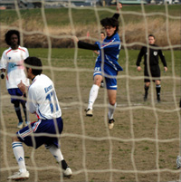
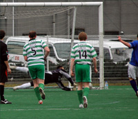
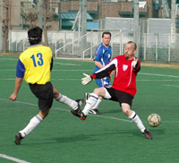
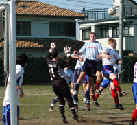

OLD STORIES - Jan 2007
Hard Fought Win Keeps Embassy Up There.
YC&AC, Sun 28th Jan. The British Embassy came through a stern test of their leadership credentials last Sunday with a hard-fought win in Yokohama. The Embassy had turned up to face YCAC 2nds, but there had obviously been some kind of mix-up with the fixtures as the game turned out to be against YCAC 1sts. more ...
TL.
YCAC Squeeze Past Jets.
 |
|
Neil Shonnard vollies home YCAC's winner. |
Hachioji Park, Sat 27th Jan. The Jets’ TML 1 campaigned continued in familiar style – a narrow defeat against one of the top teams. The goal coming mid-way through the first half – a good cross from the right went over everyone’s head and was volleyed home from 15 yards by the left midfielder, off the inside of the far post. YCAC will no doubt consider themselves worthy winners and will feel that they could have scored more, however, the Jets had a few chances and with a bit more belief in the final third could have improved on their dreadful scoring record. In all though, despite competing all over the pitch the Jets were once again found wanting in the goals department. more ...
RK.
Sala Continue Unbeaten Run.
Hachioji Park, Sat 27th Jan. Fine conditions at Hachioji saw two teams looking for all 3 points but for very different reasons. SALA, looking to continue their 9 game unbeaten run, were determined to put the pressure on the league leaders and remain in the chasing pack, which is tightly gathered at the top of the table. Similarly, the bottom of the table is just as congested, with 2 points seperating 4 of the bottom 5, so Geckoes were desperate to get 3 points in the bag, too. more ...
ST.
Lions Wilt Under Sahara Heat.
|  |
|
Alex Sahara on fire as he scores 4 for Vags. |
Misato, Sun 28th Jan. Clearly from the start of this game we could see who was more up for it, or should I say ready for the kick-off time. While Vags lined up for the kick-off, the Lions had maybe 7 players on the pitch while the others casually changed on the sidelines without any sign of panic or look as though they were in a rush.
Eventually kick-off occurred a little over 5 minutes later than the original time with Lions finally having 8 players on the pitch, giving the referee the chance to air his whistle for the first time of the match. more ...
JM.
BFC Danni La-Rued by stubborn French!
Hachioji Park, Sat 27th Jan. BFC missed a great opportunity to consolidate top spot in the TML when they were held 0-0 by a stubborn France FC in a crack-of-dawn start on Saturday. more ...
KC.
Will France FC's Sunshine Last ?!
Hachioji Park, Sat 27th Jan. France FC wanted to put an end to its losing streak (with 8 goals conceded in the last 2 games). There was some great expectations as we were putting out one of our strongest line up this season. Only problem was, we happen to face BFC, top in the league, which had just beaten the Hibs 3-0 one week before. more ...
NB.
Celts Finally Break Losing Streak.
|  |
|
Celts Keeper Aki saves a PK. |
Hachioji Park, Sun 21st Jan. Celts continued their great start to 2007 with victory over TML rivals Wall Street Geckoes at Hacjioji Park.� With Celts putting out one of the strongest line up for this season & introducing some new players in Henry & Mel.
The match kicked of with what can only be described as a shocking first 10 minutes for the Celts, almost as if we had never played together before and Geckoes capitalized on the situation with some fine interplay culminating with a good build up and finish to take the lead 1-0 (with some luck from a few unfortunate bounces and missed clearances from the Celts dozing Defense).
SY.
The Barbs deploy the "rope a dope".
Hachioji Park, Sun 21st Jan. The Barbs Management Supremo's of Pepe Deslaux, Tricky Dick and Geordie Clarkie were walking out for the Barbs night game under the floodlights at Hachijoji and taken back to that epic encounter between Ali & Foreman back in the 70's, overwhelmed with nostalgia the "rope a dope" game plan was hatched. more ...
YM.
Maritizio No Fluke!
|  |
|
Tim Daulat seals Maritizio's victory. |
Hachioji Park, Sun 21st Jan. Having just seen BEFC score late in their game to go top of the league, BFC Vags knew exactly what was required of them. News of a remarkable 3-0 victory by the BFC added to the pressure to maintain the good name of British Football Club. And of course they also wanted to send Tom off to New York in winning style.
So it was disappointing but depressingly familiar to find ourselves down 2-0 after half an hour. That said, this was not the typical Vagabonds' style of nodding off at the start of the game. Maritizio’s winning run was proving to be no fluke. Solid and mobile in midfield, composed at the back and with a skilful, pacey striker, they soon let us know we had a quality game of football on our hands. more ...
SS.
Swiss Overcome Deficit to Join BFC
YC&AC, Sun 21st Jan. Following the previous days’ news of the Hibs having gone down to the BFC, this game was going to be a battle to go top or at least keep pace. Both teams were missing some key players but there was no obvious weakness. more ...
KN.
YC&AC Scared of the Summit
YC&AC, Sun 21st Jan. With the top in sight, albeit with the Hibs having a game in hand, the YCAC passed up a historic chance to look down on the rest of the TML for the first time at the YCAC yesterday. Some awful defending in the last 20 minutes from the YCAC ruined an otherwise solid if not fluent display and allowed the Swiss to come back from 2-1 down to steal a 2-3 win. more ...
GM.
Hibs' Nightmare at Hachioji Continues!
Hachioji Park, Sat 20th Jan. Hibs ran into a good wake up call for what they are going to face in their challenge in rest of TML4 season. Though all of depleted squad of bare 11 who showed up played quite well, even created some chances and came close to scoring a goal, BFC were the ones who played with more motivation and determinations throughout. more ...
HO.
BFC Beat Hibs 3-0 to go Top
 |
|
Group hug for BFC to celebrate their Victory. |
Hachioji Park, Sat 20th Jan. A quality opening strike from BFC skipper Jon Day and two breakaway goals late in the game gave BFC a surprisingly comfortable 3-0 victory over champions Hibs on Saturday, sending them top of the TML for the first time.
BFC were tonked 4-1 in the first meeting between the sides this season, turning up at St. Mary's with a bare eleven.
This time around it was Hibs who were missing players, and a full-strength BFC playing on their preferred ground at Hachioji were generally too good in every department for the champions. more ...
JB.
Sala Break French Drought.
 |
|
Shige Chino gives the French the runaround! |
Hachioji Park, Sat 20th Jan. Sala finally overcame their bogey-team France with a comfortable 4-0 victory at Hachioji on Saturday. In fact the game was all but over half way through the first half when captain Guido Geisler expertly side footed home Sala's fourth and final goal from the edge of the box.
Much had been made of France's dominance over Sala in the TML in recent years. Amazingly Sala had managed just a solitary point from the five previous league meetings between the two sides and the heartache of last season's cup semi-final defeat on penalties was still fresh in their memories. more ...
DB.
BFC will play with themselves in quarter finals of FJ Cup
Tokyo, Thu 19th Jan. The draw for the next round of the FJ Cup & Plate competitions has been made, with some interesting match ups. more ...
FJ.
First win for YCAC 2nds
 |
|
Tim Miller about to head YC&AC in front. |
YC&AC, Sun 14th Jan. YCAC Sunday 14th January. The usual winter conditions at YCAC on Sunday morning made it difficult, but both teams played their part in a good, open contest played in bright sunshine and a biting wind. A goalless first half was followed by an exciting second period, where the YCAC finally ran out 3-1 winners.
The depleted YCAC 2nd squad was augmented with Steve Taw making a rare appearance at centre-half, and with some new faces in midfield (Neil Shonhard) and upfront (Jamie Richards). It was pretty clear from kick-off that our debutants knew where the goal was, with a powerful header from Neil being cleared on the line. more ...
SM.
YC&AC Keep Pressure On..
|  |
|
Tim Miller about to head YC&AC in front. |
YC&AC, Sun 14th Jan. A spirited and skillfull effort from the French belied their ordinary start to the season as they gave as good as they got, in the 1st half at least, at a sun drenched YCAC on sunday.
The speed and movement of their forwards caused a few flutters in the heart of the YCAC defence and Gary the Goalie rode his luck at times.
France eventually managed to score the 1st goal Gary has conceded in the last 5 1/2 League games. Unfortunately for them the home team was 3 goals up by then and finally ran out 4-1 winners. more ...
ST.
Kirk Bags a Bunch as Swiss Undo Geckoes.
Hachioji Park, Sat 13th Jan. Great day for a game and the perfect pitch for it, distances and time traveled to get to the turf in Saitama are always forgotten once play gets under way. The game started with the Geckoes clearly looking intent on getting a result with the Swiss not being comfortable under the pressure. The Geckoes midfield worked hard and they produced a goal about 10 minutes in. more ...
KN.
Suzuki Drives Swiss Home.
 |
|
More silverware for the Swiss |
Oi Chou Rinkai Koen, Sunday, 7th January 2007. 24 teams, many playing outside the Tokyo Metropolis League, converged on the Oifuto Astroturf to do battle in what is set to become one of the biggest Footy Japan organized tournaments on the annual calendar. YCAC, the Swiss, Hibs, Sala and BFC arrived fielding notably strong squads, but due to the expansive size of the pitches (causing the 3/4 sized goals to appear as mere specks on the horizon at times) any of the teams who capitalized on their goal-scoring chances, sporadic as they might be, would have a good chance of leaving the competition clutching silverware. more ...
FJ.